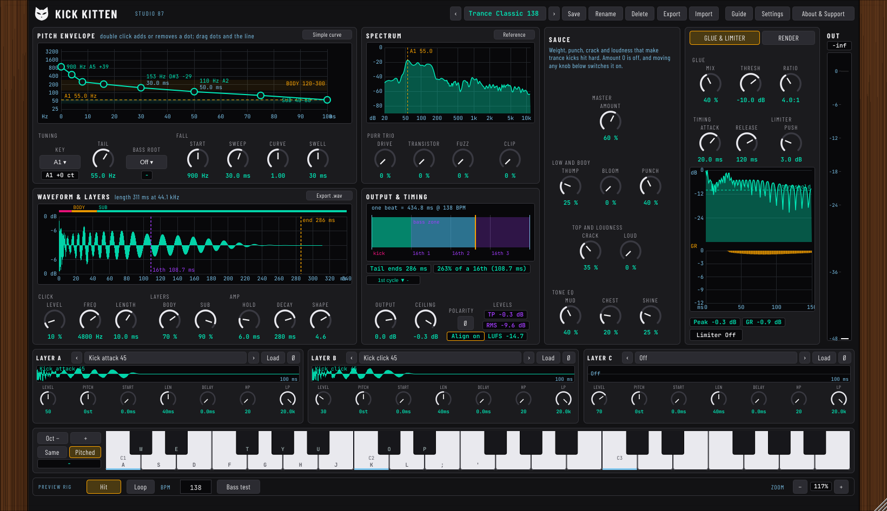

Kick Kitten
Trance kick maker, VST3 instrument and Standalone · Studio 87
A free and open source trance kick maker. Three layers (click, body, sub) follow one pitch envelope; a colour stage (Purr Trio), a Sauce stage, glue, tone EQ and a limiter finish the sound.

The plugin editor, rendered offscreen by the repo's snapshot tool (the same picture the manual uses). The approved HTML mockup is linked below.
Status: test build, pre-release v0.1.1
The sound engine was checked by numbers against the mockup, state save and load work and all 21 factory presets render clean. It has not been tuned by ear yet and has not been tested in real DAWs. The installers are not signed, so Windows and macOS will warn.
Get it, read it, try it
Releases (pre-release)One zip: installers with uninstaller for Windows, macOS and Linux (Flatpak extension and a plain .vst3 tarball), PDF manual, INSTALL.txt, SHA256SUMS.Interactive mockupThe approved design, runs in your browser. Nothing is sent anywhere.Source codeFree and open source, AGPL-3.0-or-later.What exists today
- VST3 instrument and Standalone app with the native editor ported from the mockup (the mockup is in
docs/mockups). - 21 factory presets; your own presets are plain files and are kept when you uninstall unless you choose to delete them.
- A PDF manual with an interface tour (numbered controls, lettered displays, a page per panel), built from the plugin's own control data in the release workflow. The PDF is part of the release zip, not stored in the repo.
- Release workflow, installer check and pluginval workflows in
.github/workflows. - No telemetry, no network calls, nothing collected.
What does not exist yet
- Tuning by ear and tests in real DAWs.
- Signed or notarized installers.
AGPL-3.0-or-later. Not affiliated with or endorsed by any hardware maker named here. All trademarks belong to their owners.